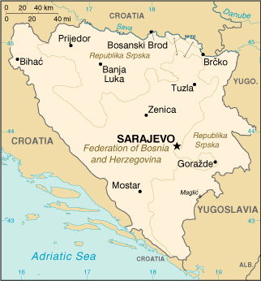

|
Bosnia and Herzegovina | |
| Introduction Geography People Government Economy Communications Transportation Military Transnational Issues | ||
|  | ||
| Bosnia and Herzegovina | Introduction | Top of Page |
| Background: | Bosnia and Herzegovina's declaration of sovereignty in October 1991, was followed by a referendum for independence from the former Yugoslavia in February 1992. The Bosnian Serbs - supported by neighboring Serbia - responded with armed resistance aimed at partitioning the republic along ethnic lines and joining Serb-held areas to form a "greater Serbia." In March 1994, Bosniaks and Croats reduced the number of warring factions from three to two by signing an agreement creating a joint Bosniak/Croat Federation of Bosnia and Herzegovina. On 21 November 1995, in Dayton, Ohio, the warring parties signed a peace agreement that brought to a halt the three years of interethnic civil strife (the final agreement was signed in Paris on 14 December 1995). The Dayton Agreement retained Bosnia and Herzegovina's international boundaries and created a joint multi-ethnic and democratic government. This national government is charged with conducting foreign, economic, and fiscal policy. Also recognized was a second tier of government comprised of two entities roughly equal in size: the Bosniak/Croat Federation of Bosnia and Herzegovina and the Bosnian Serb-led Republika Srpska (RS). The Federation and RS governments are charged with overseeing internal functions. In 1995-96, a NATO-led international peacekeeping force (IFOR) of 60,000 troops served in Bosnia to implement and monitor the military aspects of the agreement. IFOR was succeeded by a smaller, NATO-led Stabilization Force (SFOR) whose mission is to deter renewed hostilities. SFOR remains in place at a level of approximately 21,000 troops. |
| Bosnia and Herzegovina | Geography | Top of Page |
| Location: | Southeastern Europe, bordering the Adriatic Sea and Croatia |
| Geographic coordinates: | 44 00 N, 18 00 E |
| Map references: | Bosnia and Herzegovina, Europe |
| Area: |
total:
51,129 sq km
land: 51,129 sq km water: 0 sq km |
| Area - comparative: | slightly smaller than West Virginia |
| Land boundaries: |
total:
1,459 km
border countries: Croatia 932 km, Yugoslavia 527 km |
| Coastline: | 20 km |
| Maritime claims: | NA |
| Climate: | hot summers and cold winters; areas of high elevation have short, cool summers and long, severe winters; mild, rainy winters along coast |
| Terrain: | mountains and valleys |
| Elevation extremes: |
lowest point:
Adriatic Sea 0 m
highest point: Maglic 2,386 m |
| Natural resources: | coal, iron, bauxite, manganese, forests, copper, chromium, lead, zinc, hydropower |
| Land use: |
arable land:
14%
permanent crops: 5% permanent pastures: 20% forests and woodland: 39% other: 22% (1993 est.) |
| Irrigated land: | 20 sq km (1993 est.) |
| Natural hazards: | destructive earthquakes |
| Environment - current issues: | air pollution from metallurgical plants; sites for disposing of urban waste are limited; water shortages and destruction of infrastructure because of the 1992-95 civil strife |
| Environment - international agreements: |
party to:
Air Pollution, Climate Change, Law of the Sea, Marine Life Conservation, Nuclear Test Ban, Ozone Layer Protection
signed, but not ratified: none of the selected agreements |
| Geography - note: | within Bosnia and Herzegovina's recognized borders, the country is divided into a joint Bosniak/Croat Federation (about 51% of the territory) and the Bosnian Serb-led Republika Srpska or RS (about 49% of the territory); the region called Herzegovina is contiguous to Croatia and traditionally has been settled by an ethnic Croat majority |
| Bosnia and Herzegovina | People | Top of Page |
| Population: |
3,922,205
note: all data dealing with population are subject to considerable error because of the dislocations caused by military action and ethnic cleansing (July 2001 est.) |
| Age structure: |
0-14 years:
20.13% (male 405,713; female 383,850)
15-64 years: 70.78% (male 1,422,796; female 1,353,410) 65 years and over: 9.09% (male 150,802; female 205,634) (2001 est.) |
| Population growth rate: | 1.38% (2001 est.) |
| Birth rate: | 12.86 births/1,000 population (2001 est.) |
| Death rate: | 7.99 deaths/1,000 population (2001 est.) |
| Net migration rate: | 8.91 migrant(s)/1,000 population (2001 est.) |
| Sex ratio: |
at birth:
1.07 male(s)/female
under 15 years: 1.06 male(s)/female 15-64 years: 1.05 male(s)/female 65 years and over: 0.73 male(s)/female total population: 1.02 male(s)/female (2001 est.) |
| Infant mortality rate: | 24.35 deaths/1,000 live births (2001 est.) |
| Life expectancy at birth: |
total population:
71.75 years
male: 69.04 years female: 74.65 years (2001 est.) |
| Total fertility rate: | 1.71 children born/woman (2001 est.) |
| HIV/AIDS - adult prevalence rate: | 0.04% (1999 est.) |
| HIV/AIDS - people living with HIV/AIDS: | NA |
| HIV/AIDS - deaths: | less than 100 (1999 est.) |
| Nationality: |
noun:
Bosnian(s), Herzegovinian(s)
adjective: Bosnian, Herzegovinian |
| Ethnic groups: |
Serb 31%, Bosniak 44%, Croat 17%, Yugoslav 5.5%, other 2.5% (1991)
note: Bosniak has replaced muslim as an ethnic term in part to avoid confusion with the religious term Muslim - an adherent of Islam |
| Religions: | Muslim 40%, Orthodox 31%, Roman Catholic 15%, Protestant 4%, other 10% |
| Languages: | Croatian, Serbian, Bosnian |
| Literacy: |
definition:
NA
total population: NA% male: NA% female: NA% |
| Bosnia and Herzegovina | Government | Top of Page |
| Country name: |
conventional long form:
none
conventional short form: Bosnia and Herzegovina local long form: none local short form: Bosna i Hercegovina |
| Government type: | emerging democracy |
| Capital: | Sarajevo |
| Administrative divisions: | there are two first-order administrative divisions - the Bosniak/Croat Federation of Bosnia and Herzegovina (Federacija Bosna i Hercegovina) and the Bosnian Serb-led Republika Srpska; note - Brcko in northeastern Bosnia is a self-governing administrative unit under the sovereignty of Bosnia and Herzegovina; it is not part of either the Federation or Republika Srpska |
| Independence: | 1 March 1992 (from Yugoslavia) |
| National holiday: | National Day, 25 November (1943) |
| Constitution: | the Dayton Agreement, signed 14 December 1995, included a new constitution now in force |
| Legal system: | based on civil law system |
| Suffrage: | 16 years of age, if employed; 18 years of age, universal |
| Executive branch: |
chief of state:
Chairman of the Presidency Jozo KRIZANOVI (chairman since 14 June 2001, presidency member since NA March 2001 - Croat); other members of the three-member rotating (every 8 months) presidency: Zivko RADISIC (since 13 October 1998 - Serb) and Beriz BELKIC (since NA March 2001 - Bosniak); note - Ante JELAVIC was dismissed from his post by the UN High Representative in March 2001
head of government: Chairman of the Council of Ministers Zlatko LAGUMDZIJA (since 18 July 2001) cabinet: Council of Ministers nominated by the council chairman; approved by the National House of Representatives elections: the three members of the presidency (one Bosniak, one Croat, one Serb) are elected by popular vote for a four-year term; the member with the most votes becomes the chairman unless he or she was the incumbent chairman at the time of the election; election last held 12-13 September 1998 (next to be held NA September 2002); the chairman of the Council of Ministers is appointed by the presidency and confirmed by the National House of Representatives election results: percent of vote - Zivko RADISIC with 52% of the Serb vote was elected chairman of the collective presidency for the first 8 months; Ante JELAVIC with 52% of the Croat vote followed RADISIC in the rotation; Alija IZETBEGOVIC with 87% of the Bosniak vote won the highest number of votes in the election but was ineligible to serve a second term until RADISIC and JELAVIC had each served a first term as Chairman of the Presidency; IZETBEGOVIC retired from the presidency 14 October 2000 and was temporarily replaced by Halid GENJAC; Ante JELAVIC was replaced by Jozo KRIZANOVIC in March 2001 note: President of the Federation of Bosnia and Herzegovina: Karlo FILIPOVIC (since 27 February 2001); Vice President Safet HALILOVIC (since 27 February 2001); note - president and vice president rotate every year; President of the Republika Srpska: Mirko SAROVIC (since 11 November 2000) |
| Legislative branch: |
bicameral Parliamentary Assembly or Skupstina consists of the National House of Representatives or Predstavnicki Dom (42 seats - 14 Serb, 14 Croat, and 14 Bosniak; members elected by popular vote to serve two-year terms) and the House of Peoples or Dom Naroda (15 seats - 5 Bosniak, 5 Croat, 5 Serb; members elected by the Bosniak/Croat Federation's House of Representatives and the Republika Srpska's National Assembly to serve two-year terms); note - as of 1 January 2001, Bosnia and Herzegovina does not have a permanent election law; a draft law specifies four-year terms for the state and first-order administrative division entity legislatures; officials elected in 2000 were elected to two-year terms on the presumption that a permanent law would be in place before 2002
elections: National House of Representatives - elections last held 11 November 2000 (next to be held in the fall of 2002); House of Peoples - last constituted after the 11 November 2000 elections (next to be constituted in the fall of 2002) election results: National House of Representatives - percent of vote by party/coalition - NA%; seats by party/coalition - SDP 9, SDA 8, SDS 6, HDZ-BiH 5, SBH 5, PDP 2, NHI 1, BPS 1, DPS 1, SNS 1, SNSD-DSP 1, DNZ 1, SPRS 1; House of Peoples - percent of vote by party/coalition - NA%; seats by party/coalition - NA note: the Bosniak/Croat Federation has a bicameral legislature that consists of a House of Representatives (140 seats; members elected by popular vote to serve four-year terms); elections last held 11 November 2000 (next to be held NA 2002); percent of vote by party - NA%; seats by party/coalition - SDA 38, SDP 37, HDZ-BiH 25, SBH 21, DNZ 3, NHI 2, BPS 2, DPS 2, BOSS 2, GDS 1, RP 1, HSS 1, LDS 1, Pensioners' Party of FBiH 1, SNSD-DSP 1, HKDU 1, HSP 1; and a House of Peoples (74 seats - 30 Bosniak, 30 Croat, and 14 others); last constituted November 2000; the Republika Srpska has a National Assembly (83 seats; members elected by popular vote to serve four-year terms); elections last held 11 November 2000 (next to be held NA 2002); percent of vote by party - NA%; seats by party/coalition - SDS 31, PDP 11, SNSD 11, SDA 6, DSP 4, SDP 4, SPRS 4, SBH 4, DNS 3, SNS 2, NHI 1, DSRS 1, Pensioners' Party 1; as of 1 January 2001, Bosnia and Herzegovina does not have a permanent election law; a draft law specifies four-year terms for the state and first-order administrative division entity legislatures; officials elected in 2000 were elected to two-year terms on the presumption that a permanent law would be in place before 2002 |
| Judicial branch: |
BiH Constitutional Court (consists of nine members: four members are selected by the Bosniak/Croat Federation's House of Representatives, two members by the Republika Srpska's National Assembly, and three non-Bosnian members by the president of the European Court of Human Rights)
note: a new state court, established in November 1999, has jurisdiction over cases related to state-level law and appellate jurisdiction over cases initiated in the entities; the entities each have a Supreme Court; each entity also has a number of lower courts; there are ten cantonal courts in the Federation, plus a number of municipal courts; the Republika Srpska has five municipal courts |
| Political parties and leaders: | Bosnian Party or BOSS [Mirnes AJANOVIC]; Bosnian Patriotic Party or BPS [Sefer HALILOVIC]; Civic Democratic Party of BiH or GDS [Ibrahim SPAHIC]; Croat Christian Democratic Union or HKDU BiH [Ante PASALIC]; Croatian Democratic Union of BiH or HDZ-BiH [leader vacant]; Croatian Party of Rights or HSP [Zdravko HRSTIC]; Croatian Peasants Party of BiH or HSS-BiH [Ilija SIMIC]; Democratic Action Party or SDA [Alija IZETBEGOVIC]; Democratic National Alliance or DNS [Dragan KOSTIC]; Democratic Party of Pensioners or DPS [Alojz KNEZOVIC]; Democratic Party of RS or DSRS [Dragomir DUMIC]; Democratic Peoples Union or DNZ [Fikret ABDIC]; Democratic Socialist Party or DSP [Nebojsa RADMANOVIC]; Liberal Democratic Party or LDS [Rasim KADIC]; New Croatian Initiative or NHI [Kresimir ZUBAK]; Party for Bosnia and Herzegovina or SBH [Haris SILAJDZIC]; Party of Democratic Progress or PDP [Mladen IVANIC]; Party of Independent Social Democrats or SNSD [Milorad DODIK]; Pensioners' Party of FBiH [Husein VOJNIKOVIC]; Pensioners' Party of SR [Stojan BOGOSAVAC]; Republican Party of BiH or RP [Stjepan KLJUIC]; Serb Democratic Party or Serb Lands or SDS [Dragan KALINIC]; Serb National Alliance (Serb People's Alliance) or SNS [Biljana PLAVSIC]; Social Democratic Party BIH or SDP-BiH [Zlatko LAGUMDZIJA]; Socialist Party of Republika Srpska or SPRS [Zivko RADISIC] |
| Political pressure groups and leaders: | NA |
| International organization participation: | BIS, CE (guest), CEI, EBRD, ECE, FAO, G-77, IAEA, IBRD, ICAO, IDA, IFAD, IFC, ILO, IMF, IMO, Inmarsat, Intelsat, Interpol, IOC, IOM (observer), ISO, ITU, NAM (guest), OAS (observer), OIC (observer), OPCW, OSCE, UN, UNCTAD, UNESCO, UNIDO, UNMEE, UNTAET, UPU, WHO, WIPO, WMO, WToO, WTrO (observer) |
| Diplomatic representation in the US: |
chief of mission:
Ambassador Igor DAVIDOVIC
chancery: 2109 E Street NW, Washington, DC 20037 telephone: [1] (202) 337-1500 FAX: [1] (202) 337-1502 consulate(s) general: New York |
| Diplomatic representation from the US: |
chief of mission:
Ambassador Thomas J. MILLER
embassy: Alipasina 43, 71000 Sarajevo mailing address: use street address telephone: [387] (33) 445-700 FAX: [387] (33) 659-722 branch office(s): Banja Luka, Mostar |
| Flag description: | a wide medium blue vertical band on the fly side with a yellow isosceles triangle abutting the band and the top of the flag; the remainder of the flag is medium blue with seven full five-pointed white stars and two half stars top and bottom along the hypotenuse of the triangle |
| Government - note: | The Dayton Agreement, signed in Paris on 14 December 1995, retained Bosnia and Herzegovina's exterior border and created a joint multi-ethnic and democratic government. This national government - based on proportional representation similar to that which existed in the former socialist regime - is charged with conducting foreign, economic, and fiscal policy. The Dayton Agreement also recognized a second tier of government, comprised of two entities - a joint Bosniak/Croat Federation of Bosnia and Herzegovina and the Bosnian Serb Republika Srpska (RS) - each presiding over roughly one-half the territory. The Federation and RS governments are charged with overseeing internal functions. The Dayton Agreement established the Office of the High Representative (OHR) to oversee the implementation of the civilian aspects of the agreement. About 250 international and 450 local staff members are employed by the OHR. |
| Bosnia and Herzegovina | Economy | Top of Page |
| Economy - overview: | Bosnia and Herzegovina ranked next to The Former Yugoslav Republic of Macedonia as the poorest republic in the old Yugoslav federation. Although agriculture is almost all in private hands, farms are small and inefficient, and the republic traditionally is a net importer of food. Industry has been greatly overstaffed, one reflection of the socialist economic structure of Yugoslavia. TITO had pushed the development of military industries in the republic with the result that Bosnia hosted a large share of Yugoslavia's defense plants. The bitter interethnic warfare in Bosnia caused production to plummet by 80% from 1990 to 1995, unemployment to soar, and human misery to multiply. With an uneasy peace in place, output recovered in 1996-98 at high percentage rates from a low base; but output growth slowed appreciably in 1999 and 2000, and GDP remains far below the 1990 level. Economic data are of limited use because, although both entities issue figures, national-level statistics are not available. Moreover, official data do not capture the large share of activity that occurs on the black market. The marka - the national currency introduced in 1998 - has gained wide acceptance, and the Central Bank of Bosnia and Herzegovina has dramatically increased its reserve holdings. Implementation of privatization, however, has been slower than anticipated. Banking reform accelerated in early 2001 as all the communist-era payments bureaus were shut down. The country receives substantial amounts of reconstruction assistance and humanitarian aid from the international community but will have to prepare for an era of declining assistance. |
| GDP: | purchasing power parity - $6.5 billion (2000 est.) |
| GDP - real growth rate: | 8% (2000 est.) |
| GDP - per capita: | purchasing power parity - $1,700 (2000 est.) |
| GDP - composition by sector: |
agriculture:
19%
industry: 23% services: 58% (1996 est.) |
| Population below poverty line: | NA% |
| Household income or consumption by percentage share: |
lowest 10%:
NA%
highest 10%: NA% |
| Inflation rate (consumer prices): | 8% (2000 est.) |
| Labor force: | 1.026 million |
| Labor force - by occupation: | agriculture NA%, industry NA%, services NA% |
| Unemployment rate: | 35%-40% (1999 est.) |
| Budget: |
revenues:
$1.9 billion
expenditures: $2.2 billion, including capital expenditures of $NA (1999 est.) |
| Industries: | steel, coal, iron ore, lead, zinc, manganese, bauxite, vehicle assembly, textiles, tobacco products, wooden furniture, tank and aircraft assembly, domestic appliances, oil refining |
| Industrial production growth rate: | 10% (2000 est.) |
| Electricity - production: | 2.585 billion kWh (1999) |
| Electricity - production by source: |
fossil fuel:
38.68%
hydro: 61.32% nuclear: 0% other: 0% (1999) |
| Electricity - consumption: | 2.684 billion kWh (1999) |
| Electricity - exports: | 150 million kWh (1999) |
| Electricity - imports: | 430 million kWh (1999) |
| Agriculture - products: | wheat, corn, fruits, vegetables; livestock |
| Exports: | $950 million (f.o.b., 2000 est.) |
| Exports - commodities: | NA |
| Exports - partners: | Croatia, Switzerland, Italy, Germany |
| Imports: | $2.45 billion (f.o.b., 2000 est.) |
| Imports - commodities: | NA |
| Imports - partners: | Croatia, Slovenia, Germany, Italy |
| Debt - external: | $3.4 billion (2000 est.) |
| Economic aid - recipient: | $1 billion (1999 est.) |
| Currency: | marka (BAM) |
| Currency code: | BAM |
| Exchange rates: | marka per US dollar - 2.086 (January 2001), 2.124 (2000), 1.837 (1999), 1.760 (1998), 1.734 (1997), 0.015 (1996) |
| Fiscal year: | calendar year |
| Bosnia and Herzegovina | Communications | Top of Page |
| Telephones - main lines in use: | 303,000 (1997) |
| Telephones - mobile cellular: | 9,000 (1997) |
| Telephone system: |
general assessment:
telephone and telegraph network is in need of modernization and expansion; many urban areas are below average when compared with services in other former Yugoslav republics
domestic: NA international: no satellite earth stations |
| Radio broadcast stations: | AM 8, FM 16, shortwave 1 (1998) |
| Radios: | 940,000 (1997) |
| Television broadcast stations: | 33 (plus 277 repeaters) (September 1995) |
| Televisions: | NA |
| Internet country code: | .ba |
| Internet Service Providers (ISPs): | 3 (2000) |
| Internet users: | 3,500 (2000) |
| Bosnia and Herzegovina | Transportation | Top of Page |
| Railways: |
total:
1,021 km (electrified 795 km; operating as diesel or steam until grids are repaired)
standard gauge: 1,021 km 1.435-m gauge; note - many segments still need repair and/or reconstruction (2000) |
| Highways: |
total:
21,846 km
paved: 14,020 km unpaved: 7,826 km note: road system is in need of maintenance and repair (2001) |
| Waterways: | NA km; large sections of the Sava blocked by downed bridges, silt, and debris |
| Pipelines: | crude oil 174 km; natural gas 90 km (1992) |
| Ports and harbors: | Bosanska Gradiska, Bosanski Brod, Bosanski Samac, and Brcko (all inland waterway ports on the Sava), Orasje |
| Merchant marine: | none (2000 est.) |
| Airports: | 28 (2000 est.) |
| Airports - with paved runways: |
total:
9
2,438 to 3,047 m: 4 1,524 to 2,437 m: 2 under 914 m: 3 (2000 est.) |
| Airports - with unpaved runways: |
total:
19
1,524 to 2,437 m: 1 914 to 1,523 m: 7 under 914 m: 11 (2000 est.) |
| Heliports: | 4 (2000 est.) |
| Bosnia and Herzegovina | Military | Top of Page |
| Military branches: | Federation Army or VF (composed of both Croatian and Bosniak elements), Republika Srpska Army or VRS (composed of Bosnian Serb elements); note - within both of these forces air and air defense are subordinate commands |
| Military manpower - military age: | 19 years of age |
| Military manpower - availability: | males age 15-49: 1,127,146 (2001 est.) |
| Military manpower - fit for military service: | males age 15-49: 895,780 (2001 est.) |
| Military manpower - reaching military age annually: | males: 29,757 (2001 est.) |
| Military expenditures - dollar figure: | $NA |
| Military expenditures - percent of GDP: | NA% |
| Bosnia and Herzegovina | Transnational Issues | Top of Page |
| Disputes - international: | none |
| Illicit drugs: | minor transit point for marijuana and opiate trafficking routes to Western Europe |
{kind=link}